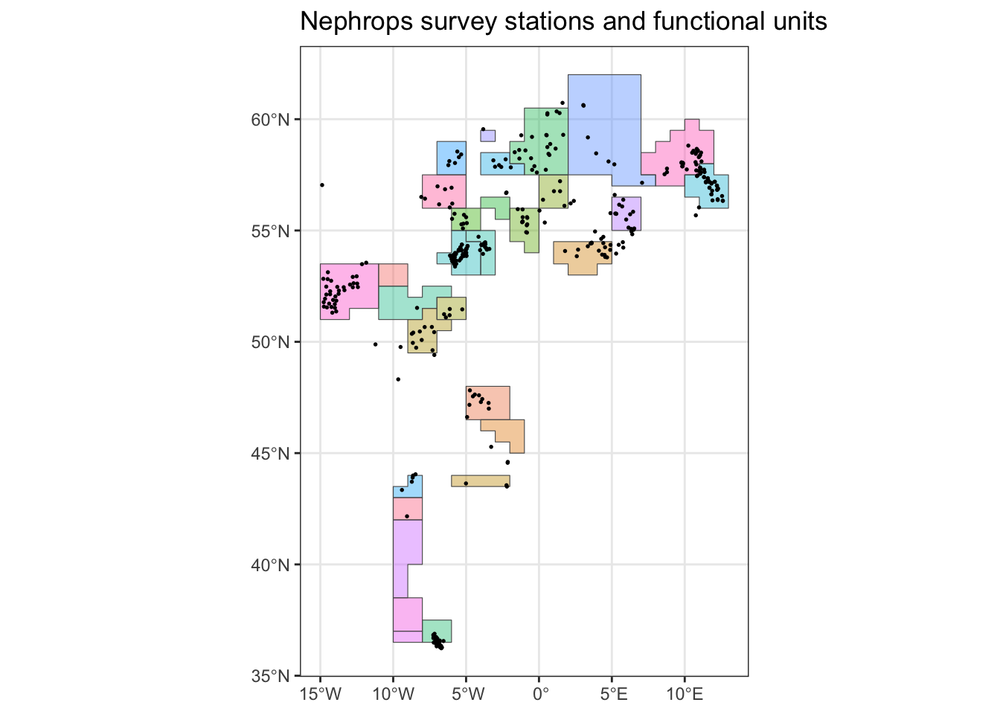
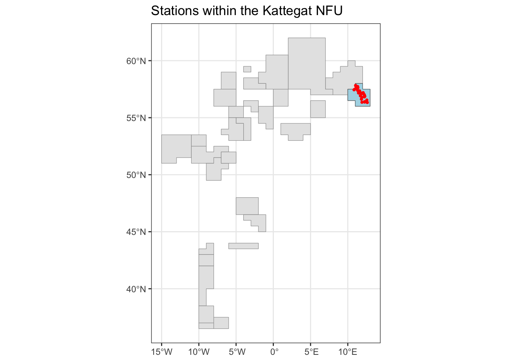
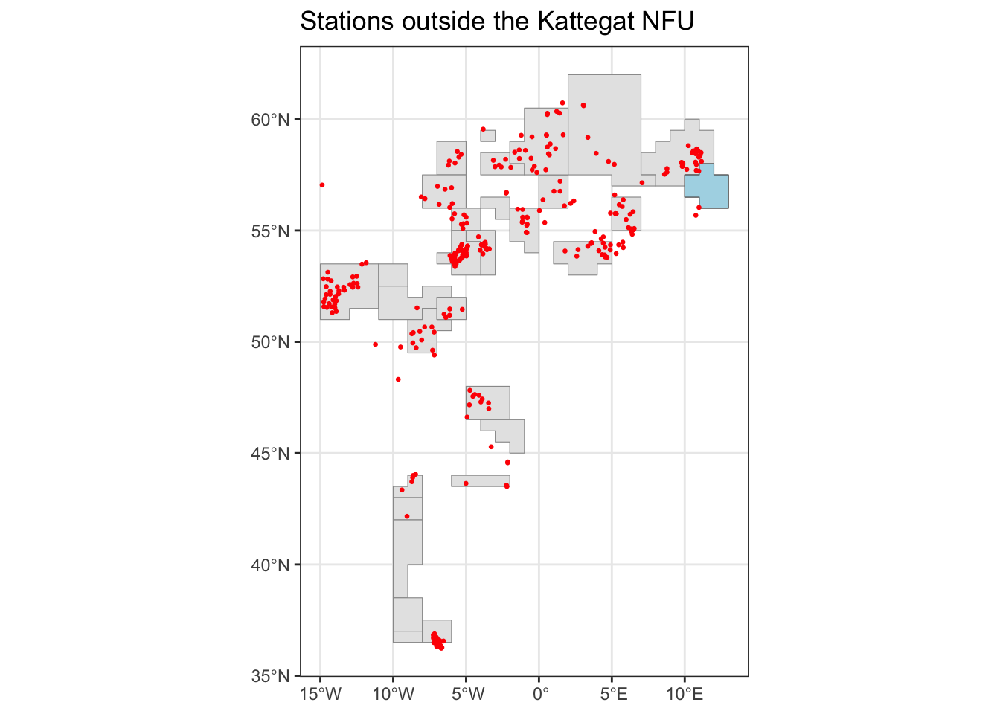
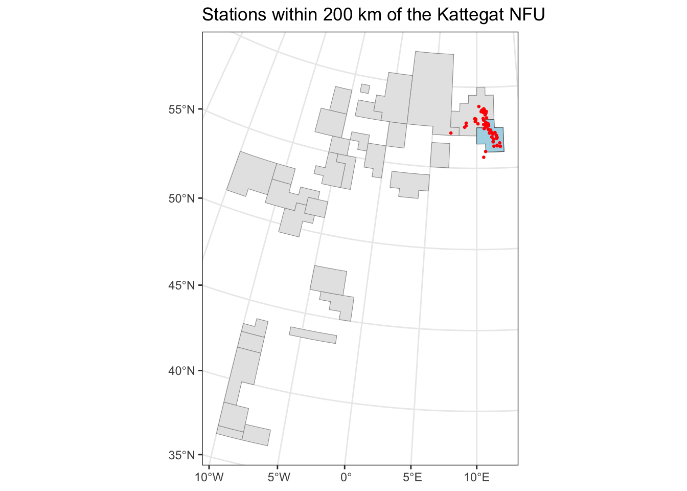
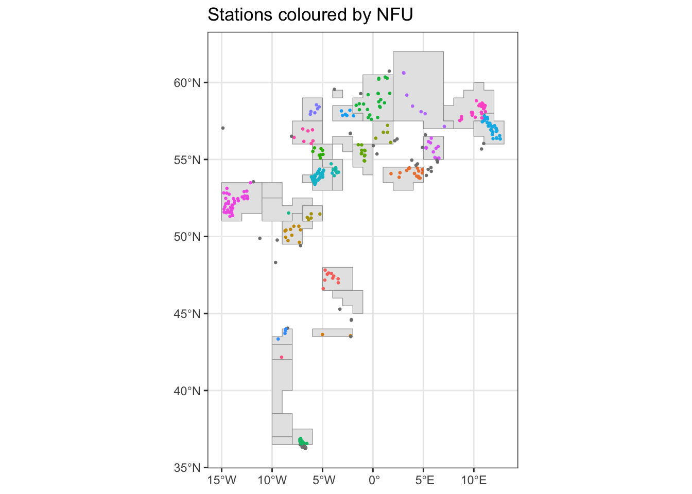
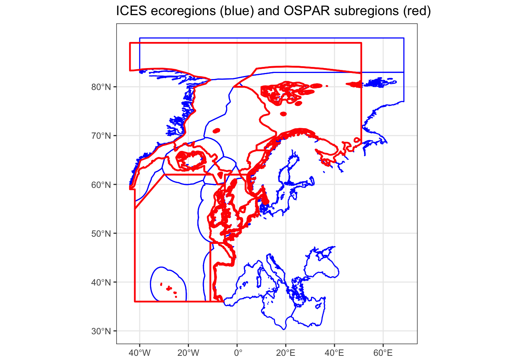
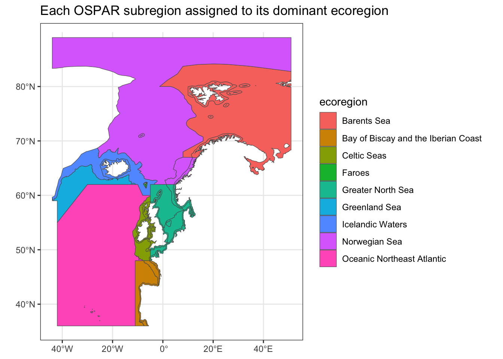
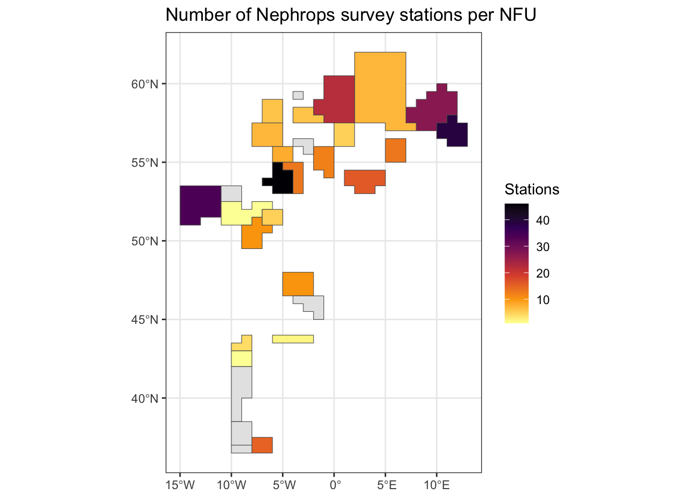
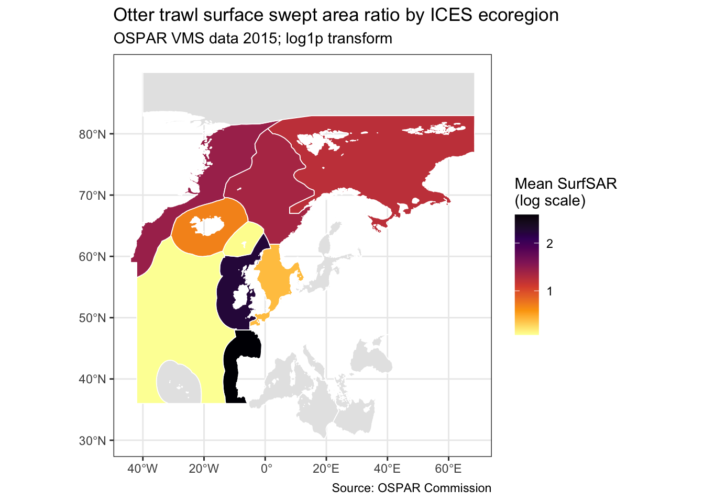

library(tidyverse)
library(sf)
library(units)Spatial operations with sf objects
This chapter covers three closely related but distinct types of spatial operation:
- Binary predicates — testing the topological relationship between two sets of geometries (does A contain B? does A intersect B?). These return TRUE/FALSE.
- Spatial subsetting — filtering one sf object by its spatial relationship to another (keep only the points that fall inside this polygon).
- Spatial joins — attaching attributes from one sf object to another based on their spatial relationship (add the name of the ecoregion to each survey station).
All three are built on the same underlying concept: topological relationships between geometries. Understanding how they differ — and when to use each — is the main goal of this chapter.
Data
We will use two main datasets throughout: Nephrops survey data from ICES DATRAS, and the Nephrops functional unit boundaries.
# DATRAS haul data (station positions)
survey <- read_csv("./data/datras_2018_haul.csv",
guess_max = 2000) |> # guess_max prevents type-guessing errors
filter(year == 2018) |>
select(id, survey, lat = shootlat, lon = shootlong)
# Nephrops catch per haul
nephrops <- read_csv("./data/datras_2018_length.csv") |>
filter(latin == "Nephrops norvegicus") |>
left_join(survey, by = "id") |>
group_by(id) |>
summarise(survey = first(survey),
lat = first(lat),
lon = first(lon),
num = sum(n)) |>
ungroup() |>
st_as_sf(coords = c("lon", "lat"), crs = 4326)
# Nephrops functional units (NFUs) — ICES assessment regions
nfu <- read_sf("./data/nephrops_fu.gpkg")
# Quick overview of both layers
ggplot() +
geom_sf(data = nfu, aes(fill = name), alpha = 0.4) +
geom_sf(data = nephrops, size = 0.3) +
theme_bw() +
theme(legend.position = "none") +
labs(title = "Nephrops survey stations and functional units")
ImportantCRS must match for spatial operations
Any spatial operation between two sf objects requires them to share the same CRS — sf will throw an error or give wrong results if they do not. Check with st_crs(a) == st_crs(b) and use st_transform() to align if needed. For topological operations (within, intersects, etc.) geographic coordinates are acceptable, though sf will warn about assuming planar geometry. For distance-based operations, project first. See the CRS chapter for the distinction between setting and transforming a CRS.
Binary predicates
Binary predicates test the topological relationship between two geometries and return TRUE or FALSE. In sf, each predicate takes two sf objects and returns either:
- A sparse index list (
sgbpclass): for each feature in the first object, the indices of features in the second that satisfy the relationship. Memory-efficient for large datasets. - A logical matrix: one row per feature in the first object, one column per feature in the second, with TRUE/FALSE at each cell. Use
sparse = FALSEto get this form.
The key predicates you will use most often are:
| Function | Returns TRUE when… | Typical use |
|---|---|---|
st_intersects() |
Geometries share any point | Most common; any overlap |
st_within() |
A is completely inside B | Point-in-polygon; A fully inside B |
st_contains() |
B is completely inside A | Reverse of st_within() |
st_overlaps() |
A and B overlap but neither contains the other | Partial overlap, same geometry type |
st_touches() |
A and B share only boundary points | Adjacent polygons |
st_disjoint() |
A and B share no points | No spatial relationship |
st_covers() |
Every point of B is in A (including boundary) | Like st_contains() but includes boundary |
st_covered_by() |
Every point of A is in B (including boundary) | Like st_within() but includes boundary |
st_equals() |
A and B have identical geometry | Exact geometric equality |
st_is_within_distance() |
A is within a given distance of B | Proximity filtering (requires projected CRS) |
st_nearest_feature() |
— | Returns index of nearest feature (not TRUE/FALSE) |
Example: which NFU does each station fall within?
# Sparse result: for each station, the index of the NFU it falls within
result_sparse <- st_within(nephrops, nfu)
class(result_sparse)[1] "sgbp" "list"result_sparse[1:5] # First 5 stations; each entry is a vector of matching NFU indices[[1]]
[1] 25
[[2]]
integer(0)
[[3]]
[1] 19
[[4]]
integer(0)
[[5]]
[1] 5# Dense result: a logical matrix (stations x NFUs)
result_matrix <- st_within(nephrops, nfu, sparse = FALSE)
dim(result_matrix) # rows = stations, columns = NFUs[1] 355 30# Which NFU does the first station fall within?
nfu$name[which(result_matrix[1, ])][1] "Kattegat"The sparse form is more practical for large datasets. The dense matrix form is mainly useful when you want to use the result directly inside filter() — though st_filter() (covered next) is now the preferred approach for that.
Spatial subsetting
Spatial subsetting filters one sf object by its spatial relationship to another — the spatial equivalent of filter() on an attribute column.
Using st_filter()
st_filter() is the modern, recommended approach for spatial subsetting. It is cleaner and more readable than the older filter(st_within(., y, sparse = FALSE)) pattern.
nfu_kattegat <- nfu |> filter(name == "Kattegat")
# Keep only stations within the Kattegat NFU
nephrops_kattegat <- st_filter(nephrops, nfu_kattegat,
.predicate = st_within)
ggplot() +
geom_sf(data = nfu, fill = "grey90", colour = "grey60") +
geom_sf(data = nfu_kattegat, fill = "lightblue") +
geom_sf(data = nephrops_kattegat, colour = "red", size = 0.8) +
theme_bw() +
labs(title = "Stations within the Kattegat NFU")
Change .predicate to use any binary predicate. The default is st_intersects:
# Stations with no overlap with the Kattegat NFU
nephrops_outside <- st_filter(nephrops, nfu_kattegat,
.predicate = st_disjoint)
ggplot() +
geom_sf(data = nfu, fill = "grey90", colour = "grey60") +
geom_sf(data = nfu_kattegat, fill = "lightblue") +
geom_sf(data = nephrops_outside, colour = "red", size = 0.5) +
theme_bw() +
labs(title = "Stations outside the Kattegat NFU")
Distance-based subsetting
st_is_within_distance() selects features within a given distance of a reference geometry. Because distance measurement requires planar coordinates, you must project your data first.
# Project to EPSG:3035 (ETRS89-LAEA, standard equal-area CRS for Europe)
nephrops_proj <- st_transform(nephrops, 3035)
nfu_kattegat_proj <- st_transform(nfu_kattegat, 3035)
# Stations within 200 km of the Kattegat boundary
nephrops_near <- st_filter(nephrops_proj, nfu_kattegat_proj,
.predicate = st_is_within_distance,
dist = set_units(200, km))
ggplot() +
geom_sf(data = st_transform(nfu, 3035), fill = "grey90", colour = "grey60") +
geom_sf(data = nfu_kattegat_proj, fill = "lightblue") +
geom_sf(data = nephrops_near, colour = "red", size = 0.5) +
theme_bw() +
labs(title = "Stations within 200 km of the Kattegat NFU")
WarningDistance operations require projected data
If you use st_is_within_distance() (or any distance measurement) on geographic coordinates (EPSG:4326), distances are computed in degrees, not metres or kilometres, and the results will be meaningless. Always project to an appropriate CRS before measuring distance. Here we use EPSG:3035 (ETRS89-LAEA), a standard equal-area projection for European waters.
The older filter() approach
For reference, the older pattern using filter() with sparse = FALSE still works and appears in older code:
# Equivalent to st_filter() with .predicate = st_within
nephrops_kattegat_old <- nephrops %>% # Using the tidyverse pipe here!
filter(st_within(x = ., y = nfu_kattegat, sparse = FALSE))Prefer st_filter() for new code — it is more readable and works correctly with both the magrittr (%>%) and native (|>) pipes.
Spatial joins
A spatial join attaches attributes from one sf object to another based on their spatial relationship rather than a shared key column. The function is st_join().
Points into polygons
The most common case: assign a polygon attribute (such as a region name) to each point that falls within it.
# Add the NFU name to each Nephrops station
nephrops_joined <- nephrops |>
st_join(nfu |> select(nfu_name = name),
join = st_within)
# Stations outside all NFUs get NA
nephrops_joined |>
st_drop_geometry() |>
count(nfu_name, sort = TRUE)# A tibble: 24 × 2
nfu_name n
<chr> <int>
1 Irish Sea West 46
2 <NA> 46
3 Kattegat 39
4 Procupine Bank 34
5 Skagerrak 27
6 Fladen Ground 22
7 Botney Gut – Silver Pit 16
8 Gulf of Cadiz 15
9 Irish Sea East 13
10 Off Horn’s Reef 13
# ℹ 14 more rowsggplot() +
geom_sf(data = nfu, fill = "grey90", colour = "grey60") +
geom_sf(data = nephrops_joined, aes(colour = nfu_name), size = 0.5) +
theme_bw() +
theme(legend.position = "none") +
labs(title = "Stations coloured by NFU")
NoteLeft join behaviour and boundary points
st_join() performs a left join by default: all features from the left object are kept, even if they match nothing in the right object. Unmatched features get NA in the joined columns. Set left = FALSE for an inner join that drops unmatched features.
Note also that a point sitting exactly on the boundary between two polygons may match both, producing a duplicate row in the result. This is rare in practice but worth being aware of when you see unexpected duplicates after a join.
Nearest feature join
When points don’t fall neatly inside any polygon — for example when survey stations lie just outside a boundary due to GPS error or coastline generalisation — you can assign each point to its nearest polygon instead:
# Assign each station to the nearest NFU, regardless of containment
nephrops_nearest <- nephrops |>
st_join(nfu |> select(nfu_name = name),
join = st_nearest_feature)
# Compare coverage: how many stations got assigned with each approach?
cat("Stations assigned with st_within: ",
sum(!is.na(nephrops_joined$nfu_name)), "\n")Stations assigned with st_within: 309 cat("Stations assigned with st_nearest_feature:",
sum(!is.na(nephrops_nearest$nfu_name)), "\n")Stations assigned with st_nearest_feature: 355 st_nearest_feature assigns every point to exactly one polygon, so there are never NA values or duplicate rows in the result.
Polygon-to-polygon joins
Joining two polygon layers is more complex because a polygon from one layer may overlap with multiple polygons from another, producing a one-to-many result.
ier <- read_sf("./data/ices_ecoregions.gpkg") |>
select(ecoregion) # 17 ecoregion polygons
ospar <- read_sf("./data/ospar.gpkg") |>
select(subregion) # 5 OSPAR subregion polygons
ggplot() +
geom_sf(data = ier, colour = "blue", fill = NA, linewidth = 0.5) +
geom_sf(data = ospar, colour = "red", fill = NA, linewidth = 0.8) +
theme_bw() +
labs(title = "ICES ecoregions (blue) and OSPAR subregions (red)")
ospar_ier <- st_join(ospar, ier)Error in `wk_handle.wk_wkb()`:
! Loop 0 is not valid: Edge 342 has duplicate vertex with edge 360What happened? The st_join() function (and others from the sf package) uses S2 spherical geometry by default. S2 is stricter about topological issues than the GEOS (plannar) engine. A polygon can pass st_is_valid() (which uses GEOS) and still fail S2 validation.
We can disable the S2 engine, do the spatial join, and then re-enable it afterward.
sf_use_s2(FALSE)
ospar_ier <- st_join(ospar, ier)
sf_use_s2(TRUE)
nrow(ospar) # Original OSPAR subregions[1] 50nrow(ospar_ier) # More rows — each OSPAR region appears once per overlapping ecoregion[1] 92
ImportantOne-to-many joins with polygons
When one OSPAR subregion overlaps with several ecoregions, st_join() creates one result row for each overlapping pair. This is correct behaviour, not an error — but it means you cannot simply sum areas or count features on the result without double-counting.
There are two common strategies:
Option 1 — Keep only the largest overlap using largest = TRUE. Each OSPAR region is matched to whichever ecoregion it overlaps most. The result has the same number of rows as the input.
sf_use_s2(FALSE)
ospar_ier_largest <- st_join(ospar, ier, largest = TRUE)
sf_use_s2(TRUE)
nrow(ospar_ier_largest) # Same as nrow(ospar)[1] 50Option 2 — Keep all matches and work with them explicitly. This is appropriate when you need to know all overlapping ecoregions, for example to compute area-weighted summaries. In that case, use st_intersection() (from the Geometries chapter) to actually clip the polygons before calculating areas.
ggplot() +
geom_sf(data = ospar_ier_largest, aes(fill = ecoregion)) +
theme_bw() +
labs(title = "Each OSPAR subregion assigned to its dominant ecoregion")
Counting points in polygons
A very common task is counting how many points from one layer fall within each polygon of another. Spatial join followed by count() is the cleanest approach:
station_counts <- nephrops |>
st_join(nfu |> select(nfu_name = name), join = st_within) |>
st_drop_geometry() |> # Drop geometry before summarising
count(nfu_name, name = "n_stations") |>
filter(!is.na(nfu_name)) |> # Remove stations not in any NFU
arrange(desc(n_stations))
station_counts# A tibble: 23 × 2
nfu_name n_stations
<chr> <int>
1 Irish Sea West 46
2 Kattegat 39
3 Procupine Bank 34
4 Skagerrak 27
5 Fladen Ground 22
6 Botney Gut – Silver Pit 16
7 Gulf of Cadiz 15
8 Irish Sea East 13
9 Off Horn’s Reef 13
10 Farn Deeps 12
# ℹ 13 more rows# Join counts back to NFU polygons for mapping
nfu_counts <- nfu |>
left_join(station_counts, by = c("name" = "nfu_name"))
ggplot() +
geom_sf(data = nfu_counts, aes(fill = n_stations)) +
scale_fill_viridis_c(option = "B", direction = -1, na.value = "grey90") +
theme_bw() +
labs(title = "Number of Nephrops survey stations per NFU",
fill = "Stations")
NoteWhy use st_drop_geometry() before summarising?
Calling st_drop_geometry() before count() converts the sf object to a plain tibble. This prevents sf from trying to aggregate the geometry column alongside the attributes, which would produce a MULTIPOINT for each NFU — technically valid but not what we want here, and slower. Summarising on the plain tibble and then joining back to the polygon layer for mapping is the cleanest pattern.
Aggregating a large polygon dataset by region
The examples above use relatively small datasets. This section uses the OSPAR otter trawl intensity layer — 91,190 polygon features covering the North-East Atlantic — as a realistic performance test and a substantive fisheries example.
The dataset is OSPAR_intensity_Otter_2015.gpkg. Key columns are:
| Column | Description |
|---|---|
FishingH |
Fishing hours |
KWfishingH |
kW-fishing hours — effort weighted by vessel power |
SurfSAR |
Surface swept area ratio — area swept relative to cell area |
totweight |
Total landed weight (tonnes) |
totvalue |
Total landed value |
Note
The swept area ratio (SAR) is a standard metric used in ICES VMS Data Call outputs and in wind farm Environmental Impact Assessments. A value of 1.0 means the cell was swept once on average during the reference period; values above 1.0 indicate repeated passes. SurfSAR covers surface-contacting gear (otter trawls and similar); bottom-contacting gear (tickler chains, pulse gear) would be captured in SubSurfSAR if present.
# 91,190 polygons — this may take a few seconds to read
ospar_int <- read_sf("./data/OSPAR_intensity_Otter_2015.gpkg") |>
select(FishingH, KWfishingH, SurfSAR, totweight, totvalue)
# Quick sense-check: how many cells have any recorded fishing?
ospar_int |>
st_drop_geometry() |>
summarise(n_cells = n(),
n_fished = sum(FishingH > 0, na.rm = TRUE),
median_SurfSAR = median(SurfSAR, na.rm = TRUE),
max_SurfSAR = max(SurfSAR, na.rm = TRUE))# A tibble: 1 × 4
n_cells n_fished median_SurfSAR max_SurfSAR
<int> <int> <dbl> <dbl>
1 91190 88683 0.640 67.4Spatial join with ICES ecoregions
We want to know total fishing hours and mean SAR for each ICES ecoregion. The workflow is: spatial join → drop geometry → summarise by ecoregion.
The SurfSAR values must be averaged, not summed — they are already normalised by cell area. Fishing hours and effort (KWfishingH) are totals and can be summed.
ier <- read_sf("./data/ices_ecoregions.gpkg") |>
select(ecoregion)
# The OSPAR layer may have invalid geometries under S2 — disable it for the join
sf_use_s2(FALSE)
ospar_eco <- st_join(ospar_int, ier, join = st_intersects, left = FALSE)
sf_use_s2(TRUE)
# Summarise per ecoregion
eco_summary <- ospar_eco |>
st_drop_geometry() |>
filter(!is.na(ecoregion)) |>
group_by(ecoregion) |>
summarise(
total_FishingH = sum(FishingH, na.rm = TRUE),
total_KWfishingH = sum(KWfishingH, na.rm = TRUE),
mean_SurfSAR = mean(SurfSAR, na.rm = TRUE),
n_cells = n(),
.groups = "drop"
) |>
arrange(desc(total_FishingH))
eco_summary# A tibble: 9 × 5
ecoregion total_FishingH total_KWfishingH mean_SurfSAR n_cells
<chr> <dbl> <dbl> <dbl> <int>
1 Celtic Seas 1405642. 722790404. 2.31 21079
2 Greater North Sea 1054921. 542733094. 0.568 25370
3 Bay of Biscay and the Ib… 742268. 257208900. 2.82 6594
4 Icelandic Waters 184916. 259138768. 0.765 10697
5 Barents Sea 125505. 494667301. 1.20 24028
6 Norwegian Sea 12652. 46601810. 1.31 1570
7 Greenland Sea 8609. 29296290. 1.39 775
8 Oceanic Northeast Atlant… 6962. 6596582. 0.377 1091
9 Faroes 2233. 3188725. 0.390 446Join the summary back to the ecoregion polygons for mapping:
ier_summary <- ier |>
left_join(eco_summary, by = "ecoregion")
ggplot(ier_summary) +
geom_sf(aes(fill = mean_SurfSAR), colour = "white", linewidth = 0.3) +
scale_fill_viridis_c(option = "inferno", direction = -1,
transform = "log1p",
name = "Mean SurfSAR\n(log scale)",
na.value = "grey90") +
labs(title = "Otter trawl surface swept area ratio by ICES ecoregion",
subtitle = "OSPAR VMS data 2015; log1p transform",
caption = "Source: OSPAR Commission") +
theme_bw()
NoteWhy
log1p?
Swept area ratios are right-skewed: most cells have low values but a few heavily fished cells have very high SAR. A log1p (log(x + 1)) transform compresses the upper tail and reveals variation at low-to-moderate intensities. Using log1p rather than log avoids the undefined value at zero.
NoteExercise
- Repeat the ecoregion summary using
KWfishingHinstead ofFishingH. Which ecoregion ranks highest on effort-weighted fishing hours but lower on raw fishing hours? What might explain this? - Filter the OSPAR layer to cells where
SurfSAR > 5and make a map showing these high-intensity cells. Do they cluster in particular areas? - (Extension) Load a protected area polygon (e.g. from
helcom.gpkg) and usest_filter()to find all OSPAR cells that intersect it. What is the mean SAR inside versus outside the protected area?
Summary
| Task | Recommended approach |
|---|---|
| Test spatial relationship | st_intersects(), st_within(), etc. |
| Filter by spatial relationship | st_filter(x, y, .predicate = st_within) |
| Filter by distance | st_filter(x, y, .predicate = st_is_within_distance, dist = ...) |
| Assign polygon attributes to points | st_join(points, polygons, join = st_within) |
| Assign nearest polygon to points | st_join(points, polygons, join = st_nearest_feature) |
| Polygon join — one dominant match | st_join(a, b, largest = TRUE) |
| Polygon join — all matches | st_join(a, b) — result has more rows than input |
| Count points per polygon | st_join() |> st_drop_geometry() |> count() |
| Check CRS match | st_crs(a) == st_crs(b) |
| Align CRS before operations | st_transform(x, crs) |